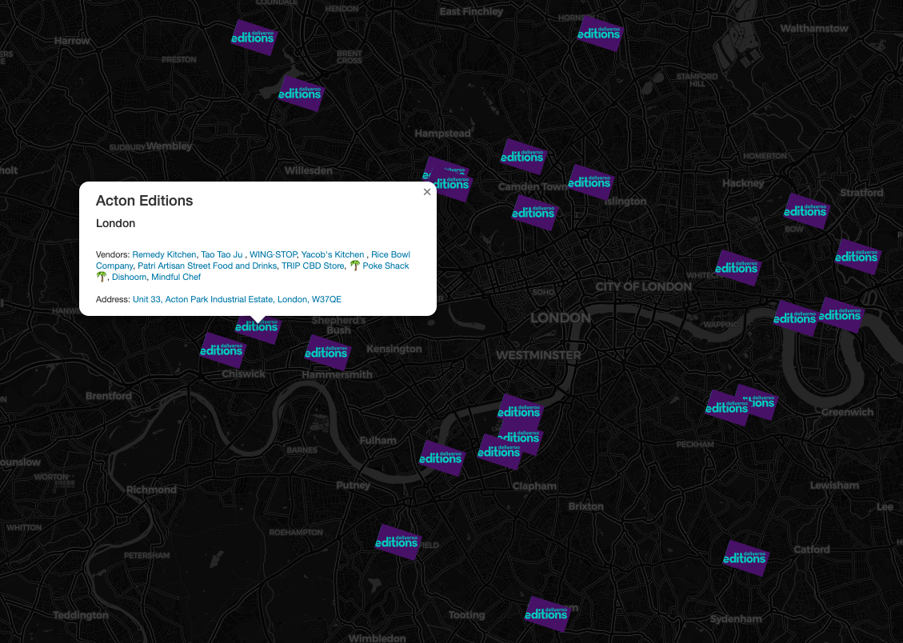
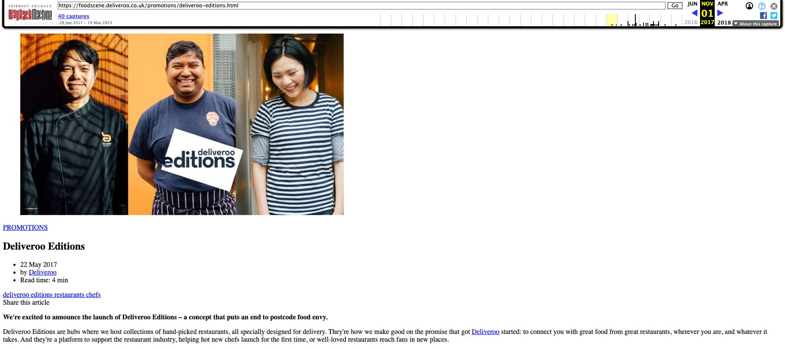
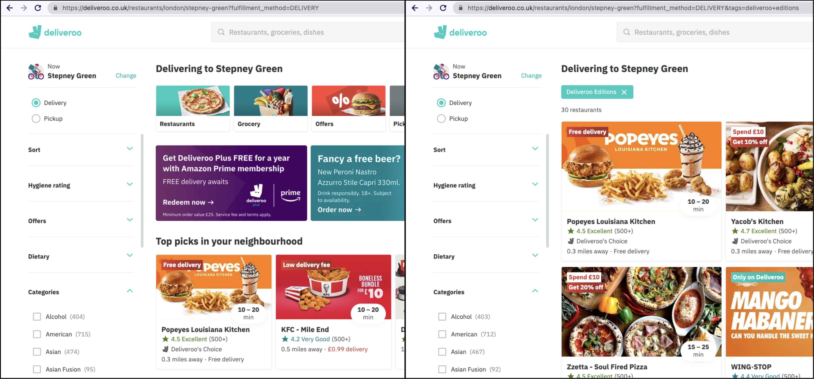
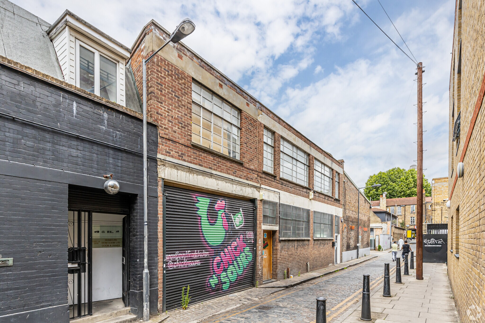
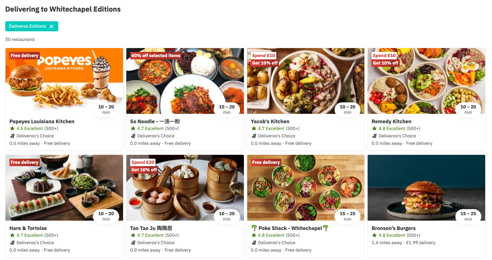
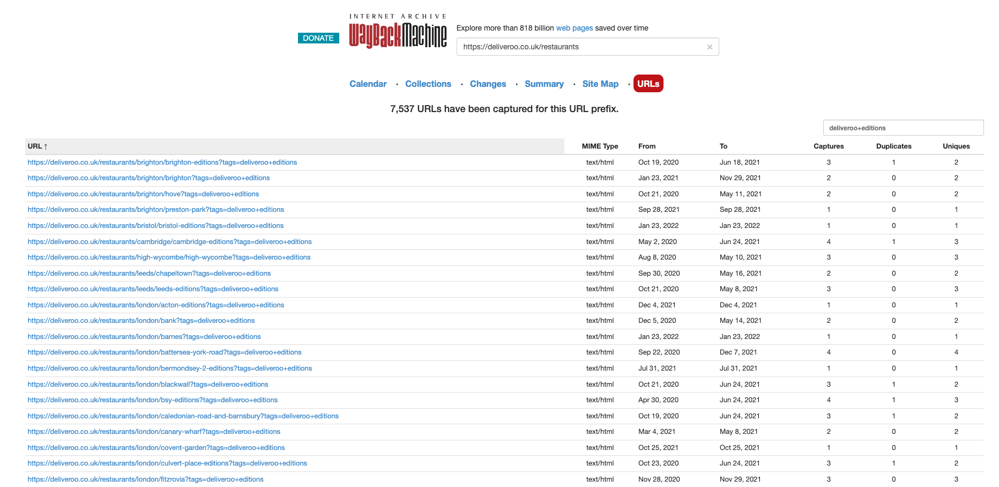
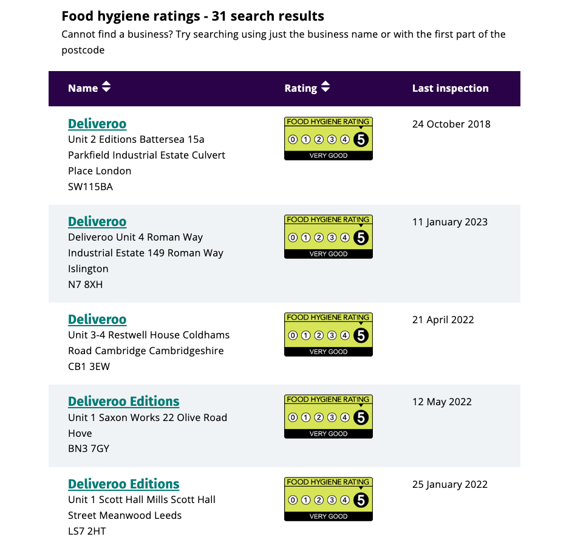
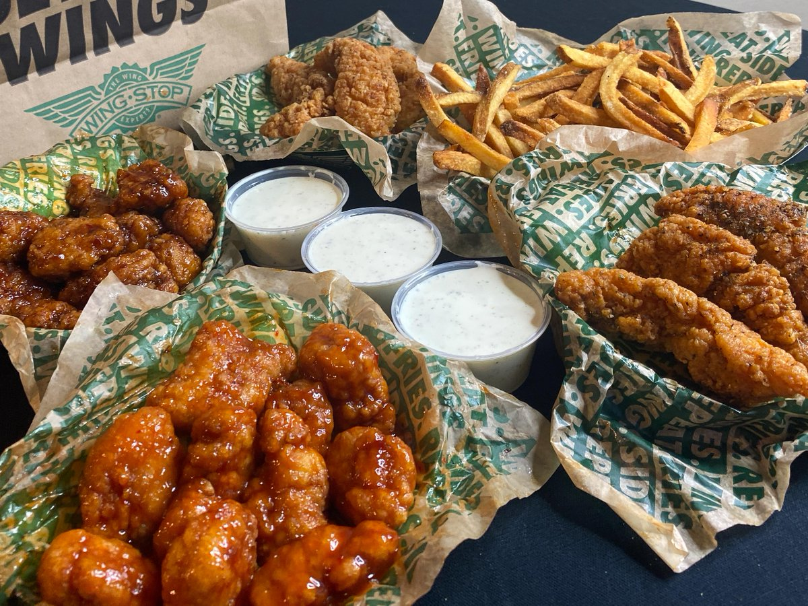

Dedicated sites for preparing takeaway meals for delivery-only known as “dark kitchens” have been widely adopted across the food service industry throughout the past half decade. Dark kitchens enable restaurants to seperate their delivery business from in-house business and operate from non-residential central locations where overhead and operating costs are reduced. Understanding the successes and failures of this service model could provide useful insights into emerging forms of economic planning, risk management, urban design and food distribution. However there is a lack of detailed data on the growth and current state of dark kitchens within the UK.
To the best of our knowledge, a map of the UK’s dark kitchen locations does not exist. Therefore we set out to make one for Deliveroo’s UK dark kitchen facilities, known as ‘Editions’, to better understand their growth and current state.
Disclaimer: all data within this blog post was gathered before Wednesday 19th July 2023.
Locating Editions
Deliveroo Editions launched in May 2017 as a concept to put ‘an end to postcode food envy’. Initially trialed in Camberwell, Battersea, Dulwich and Canary Wharf, Deliveroo announced there ambition to scale to 30 locations across the UK within the first year. The Internet Archive’s Wayback Machine maintains a capture of the webpage for the original Deliveroo Editions announcement.

To find restaurants using Deliveroo’s dark kitchens, known as Editions partners, we can add tags=deliveroo+editions as a query string when searching for restaurants near a given location. For example to find all the Editions partners delivering to Stepney Green, we can try: https://deliveroo.co.uk/restaurants/london/stepney-green?fulfillment_method=DELIVERY&tags=deliveroo+editions:

If we load the webpage for Popeyes Louisiana Kitchen, we can identify the partner is based at “Whitechapel Editions” from the location name in restaurant’s url: https://deliveroo.co.uk/menu/London/whitechapel-editions/popeyes-editions-wme/?day=today&geohash=gcpvngtckn3c&time=ASAP. Therefore the address for Popeyes Louisiana Kitchen is also the address for Whitechapel Editions which happens to be 10 Assembly Passage, London, E14UT, a 2-storey B-class office space with a disco ball included built in 1906 right next to the busy A11 road into central London.

To find all the other partners based at Whitechapel Editions (london/whitechapel-editions), we can search for Editions partners (tags=deliveroo+editions) nearby with the following url: https://deliveroo.co.uk/restaurants/london/whitechapel-editions?fulfillment_method=DELIVERY&tags=deliveroo+editions. We can deduce that all the restaurants based 0.0 miles away are those at the Editions kitchen and can validate this by checking for whitechapel-editions in their urls.

Using this approach, we can trawl the Internet Archive for Deliveroo’s historic data and explore the possibility of charting the growth of Editions since 2017.
Historic Editions Data
Deliveroo’s website has been archived many times by the Wayback Machine. Some of the captured webpages include search results specific to UK locations with Deliveroo Editions filters. Unfortunately only 46 webpages with Editions search results could be retrieved, each of which was captured between 1 and 5 times over a period of 2 years. This data is likely too sparse to allow for detailed analysis of the growth of Editions in the UK. However the data has some utility in providing an incomplete historic list of Editions partners between 2020 and 2022.

By iterating through every capture extracting the restaurant names, restaurant urls, Editions and timestamps, we can build a dataset of over 500 Editions partners:
Whilst mapping the growth of Editions with historic data remains an elusive goal, we can look to present day data to build a map of Editions in the UK in its current state.
Present-Day Editions Data
Many of Deliveroo’s well known Editions locations can be found by searching the Food Standards Agency (FSA) for businesses containing “Deliveroo” in their title. Deliveroo requires its restaurants to have an FSA rating of at least 2 to use the platform. Deliveroo advertises Editions as going above and beyond these minimal requirements, maintaining the highest possible hygiene ratings across all of its sites. This is a far cry from the poor hygiene practices and lack of regulation associated with the original ‘ghost kitchens’ of New York that advertised through Grubhub and attracted media attention in 2015.

We can cross reference 16 of these businesses with Editions locations encountered from searching Deliveroo’s site:
However there are many Editions partners that do not operate from any of these addresses. Here is a handful of examples:
- Luxford Burgers, Sabor & Bulked - Loaded Fries (Broughton)
- Sprigg - Ingram Street (Glasgow City Centre)
- Pasta Evangelists (Wortley)
To get all of the Editions partners in the UK at any one time we can search Deliveroo with a postcode from each of the ~2900 postcode districts in the UK. Whilst this brute force approach is relatively inefficient given that Deliveroo is not operating at most UK postcodes outside of cities and large towns, it does offer a near-complete picture of Deliveroo’s operations in the UK and most of the Editions partners.
Mapping Deliveroo Editions
By searching all of the Deliveroo restaurants delivering to postcodes within each of the UK’s ~2900 postcode districts, 238 Editions partners were identified across 53 addresses and 12 regions:
Wingstop (2021 Deliveroo Restaurant of the Year winner), Dishoom (2021 Deliveroo Best Indian Restaurant winner) and the Athenian appear to be the most scalable partners appearing in 6+ Editions across the UK. Editions sites also include popular partners that don’t offer cooked food like the Californian CBD drinks vendors ‘Trip CBD Store’ and Ben & Jerry’s.

London is the region containing the most dark kitchens with 32 Editions sites compared to the 21 locations spread across all other regions of the UK:
London also offers the greatest choice of Editions partners at 127 compared to the 112 vendors spread across the other Editions sites.
The Editions site with the most partners is in Leeds with 22 partners under one roof at 1 Scott Hall Street: